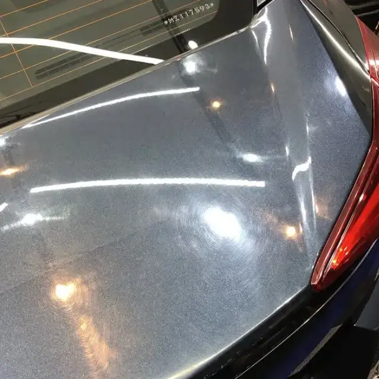
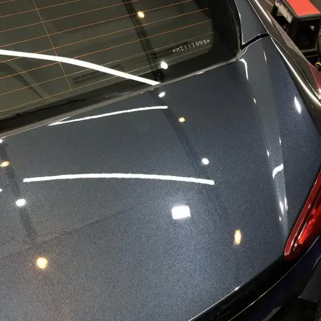
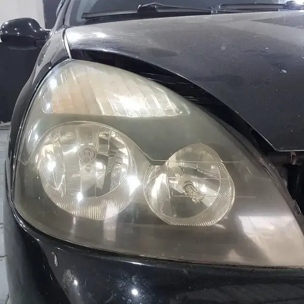
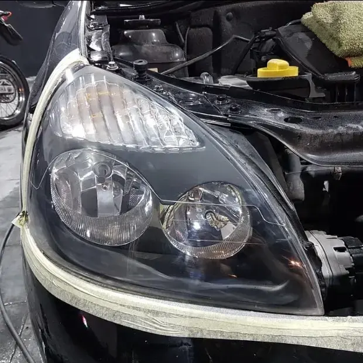

PPF
Filme de proteção para preservar áreas expostas da pintura contra marcas e pequenas agressões do uso diário.
Pedir avaliaçãoEstética automotiva especializada
PPF, películas e tratamentos técnicos para preservar a aparência, o conforto e os detalhes do seu veículo.
Proteção
para pintura e vidros
Acabamento
técnico e detalhado
Experiência
comprovada por clientes
Menu de serviços
Da proteção da pintura ao cuidado interno, cada serviço é indicado de acordo com o uso e o estado do veículo.
Filme de proteção para preservar áreas expostas da pintura contra marcas e pequenas agressões do uso diário.
Pedir avaliaçãoMais conforto visual e privacidade, com opções de tonalidade adequadas ao seu projeto.
Linhas profissionais com diferentes níveis de resistência e garantia para vidros laterais e traseiro.
Ver opçõesLimpeza detalhada com atenção às superfícies, acabamentos e particularidades de cada veículo.
Tratamento do acabamento da pintura para recuperar brilho e melhorar a leitura visual da superfície.
Camada de proteção com acabamento de alto brilho para facilitar a manutenção e preservar a pintura.
Limpeza de bancos, carpetes, forros e áreas internas para devolver cuidado e conforto à cabine.
Película antivandalismo
Compare as linhas disponíveis e solicite uma indicação personalizada para o seu veículo.
Todas as opções informam 99% de proteção UV. A película de segurança é aplicada somente nos vidros das portas; vidro traseiro e/ou para-brisa recebem apenas película de privacidade.
Resultados reais
Compare o estado de entrada e a entrega após o tratamento realizado pela Blueline.
Polimento técnico


Restauração de farol


Experiências reais
“A qualidade me surpreendeu positivamente, recebi um serviço nota 100. Restauração de faróis, limpeza completa de motor e chassi, higienização de bancos e itens de tecido, couro e etc.”
“Atendimento impecável e o serviço de primeira. Fiz polimento e lavagem detalhada na Tracker da minha mãe. Retornarei para mais no futuro.”
“Pode confiar! Desde o início ele foi super solícito, respondeu super rápido e explicou todas as dúvidas que tinha. Deixei o carro uma semana com eles, foi excelente o serviço.”
“Desde o primeiro contato, já senti muita segurança nos serviços prestados e na retirada do veículo. Fiquei ainda mais tranquilo com a qualidade do serviço e profissionalismo da equipe.”
“Fiquei impressionado com o cuidado meticuloso e a atenção aos detalhes demonstrados pelo Nicolas. Cada canto do meu veículo foi cuidadosamente limpo, deixando-o impecável e com um aspecto renovado.”
Seu carro, próximo nível
Fale com a Blueline, envie o modelo do carro e o serviço de interesse para receber um orçamento personalizado.
Conversar no WhatsApp